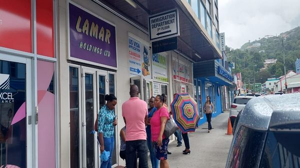

Entry Requirements
Saint Lucia operates a relatively open immigration policy, welcoming visitors from over 100 countries without a visa. All international arrivals — including Saint Lucian citizens and residents returning home — must complete the Saint Lucia Electronic Immigration Form at travelslu.govt.lc before boarding their flight. After submission, travellers receive a QR code by email that must be presented to Immigration and Customs at the airport.
General Entry Documentation
| Passport | Valid for at least 6 months beyond intended departure date, with blank pages for entry stamps |
| Electronic Entry Form | Mandatory for all travellers. Submit up to 72 hours before flight (not earlier). One form per family. |
| Return/Onward Ticket | Required for all non-resident visitors |
| Proof of Accommodation | Hotel reservation, rental agreement, or letter of invitation from host |
| Financial Means | Ability to maintain yourself during stay (bank statements or credit cards) |
| COVID-19 | No COVID-19 vaccination or testing requirements (as of 2025) |
OECS ID Entry
Citizens of OECS member states (Antigua & Barbuda, Dominica, Grenada, Montserrat, St. Kitts & Nevis, St. Vincent & the Grenadines) can enter Saint Lucia without a passport using a valid government-issued photo ID, driver’s license, voter registration card, or social security card.
ePassport (From August 2025)
Saint Lucia began issuing biometric ePassports (ICAO-compliant with embedded chip) from August 2025, with the rollout continuing through 2026. Adult passports are now valid for 10 years (increased from 5 years). Minor passports remain valid for 5 years. All new and renewed passports, including those issued through the CBI programme, are biometric. CBI passports have a 5-year initial validity (renewable), and a 30-day residency requirement is being implemented under the regional CBI harmonisation agreement.
Competitive Advantage: No US Visa Restrictions
In early 2025, the United States imposed visa restrictions on CBI passport holders from Antigua & Barbuda and Dominica due to concerns about programme integrity. Saint Lucia has not been subject to any such restrictions, making its CBI passport one of the most attractive in the Caribbean for investors seeking reliable visa-free travel. This further enhances the value of Saint Lucia’s CBI programme relative to regional competitors.
Visa-Free Countries
Citizens of approximately 114 countries can enter Saint Lucia visa-free for tourism and business purposes. The permitted stay ranges from 42 days (6 weeks) to 6 months depending on nationality and bilateral agreements.
Visa-Free Entry by Category
| Category | Countries / Territories | Max Stay |
|---|---|---|
| OECS Members | Antigua & Barbuda, Dominica, Grenada, Montserrat, St. Kitts & Nevis, St. Vincent & the Grenadines, Anguilla, British Virgin Islands | Indefinite (must register) |
| CARICOM Members | Barbados, Belize, Guyana, Jamaica, Suriname, Trinidad & Tobago, The Bahamas, Haiti (plus OECS above) | 6 months |
| North America | United States, Canada | 6 weeks |
| United Kingdom & Territories | UK, Bermuda, Cayman Islands, Turks & Caicos, Gibraltar | 6 weeks |
| European Union / Schengen | All 27 EU member states plus Iceland, Liechtenstein, Norway, Switzerland | 90 days |
| Other Commonwealth | Australia, New Zealand, Singapore, Malaysia, South Africa, and other Commonwealth nations | 6 weeks |
| Americas | Argentina, Brazil, Chile, Colombia, Costa Rica, Mexico, Panama, Paraguay, Uruguay, Venezuela | 6 weeks |
| Asia & Pacific | Japan, South Korea, Israel, Turkey, Hong Kong, Taiwan | 6 weeks |
| Europe (Non-EU) | Andorra, Monaco, San Marino, Montenegro, Russia* | 6 weeks |
* Russia is listed as visa-free for entry to Saint Lucia; however, Russian nationals are restricted from applying to the CBI programme (see CBI Eligibility). Visa policy is separate from CBI policy. Confirm current status with the Immigration Department.
Visa on Arrival
Citizens of approximately 50 countries can obtain a visa on arrival at the airport, valid for 6 weeks. These include:
India, Nigeria, Ghana, Kenya, Pakistan, Philippines, Thailand, Malaysia, Vietnam, Cambodia, Ethiopia, Senegal, Uganda, Rwanda, Bolivia, Ecuador, El Salvador, Guatemala, Honduras, Nicaragua, Peru, Nepal, Mongolia, Bhutan, Cameroon, Gambia, Guinea, Mali, Mozambique, Sierra Leone, Togo, Zimbabwe, Madagascar, Mauritania, Cape Verde, Djibouti, Benin, and others.
Important Note
Visa on arrival is subject to immigration officer discretion. Travellers are advised to apply for a visa in advance through a Saint Lucia diplomatic mission or the Immigration Department to avoid potential issues at the port of entry.
Visa Required (Advance Application)
Citizens of approximately 35+ countries must obtain a visa from a Saint Lucia diplomatic mission or through the Immigration Department before travel. These include:
Afghanistan, Bangladesh, China (PRC), Cuba, Democratic Republic of the Congo, Dominican Republic, Eritrea, Iran, Iraq, Libya, Myanmar, North Korea, Somalia, South Sudan, Syria, Yemen, and several others.
How to apply: Contact the Immigration Department visa office at visaoffice@police.govt.lc or submit through British consulates in countries where Saint Lucia has no diplomatic representation. Applications should be submitted at least 2 weeks before travel.
Cruise ship passengers visiting Saint Lucia for one day are generally exempted from visa requirements regardless of nationality.
Visa Types & Fees
Non-Immigrant Visa Categories
| Visa Type | Purpose | Duration | Fee |
|---|---|---|---|
| Tourist Visa (Single Entry) | Leisure, sightseeing, visiting friends/family | Up to 42 days | EC$125 / ~US$46 |
| Tourist Visa (Multiple Entry) | Multiple leisure visits within validity | 1 year (42 days per visit) | EC$190 / ~US$70 |
| Business Visa | Meetings, conferences, investment exploration | Up to 6 weeks | ~US$35 |
| Student Visa | Enrollment at recognised educational institution | Duration of course | ~US$25 |
| Transit Visa | Layover en route to third country | 24–48 hours | ~US$20 |
| Conference Visa | Attending specific professional events | Event duration | ~US$35 |
| Digital Nomad (Live It) | Remote work from Saint Lucia | Up to 12 months (renewable) | EC$125 / ~US$46 (single) or EC$190 / ~US$70 (multiple) |
Processing time: 5 working days (standard). Expedited processing (1 day) available for ~US$80. Applications submitted to the Immigration Department, Royal Saint Lucia Police Force.
Required Documents (All Non-Immigrant Visas)
- Completed visa application form
- Valid passport (6+ months validity, 2 blank pages minimum)
- Two certified passport-size photographs (recent, within 6 months)
- Return or onward flight ticket
- Proof of accommodation (hotel booking or invitation letter)
- Travel itinerary
- Bank statements demonstrating financial capacity
- Employment certificate or business registration (for business visas)
- Acceptance letter from institution (for student visas)
- Visa fee receipt
Work Permits
Any non-citizen wishing to work in Saint Lucia must obtain a work permit from the Department of Labour (Ministry of Education, Sustainable Development, Innovation, Science, Technology and Vocational Training) before commencing employment. The employer must sponsor the application and demonstrate that no qualified Saint Lucian or CARICOM national is available for the position.
Work Permit Categories
| Category | Description | Duration | Renewable |
|---|---|---|---|
| Temporary Work Permit | Short-term employment, seasonal work, specific projects | Up to 12 months | Yes |
| Long-Term Work Permit | Ongoing employment exceeding one year | 1–3 years | Yes |
| Self-Employment Permit | Foreign entrepreneurs establishing or operating businesses | 1–3 years | Yes |
| Entertainment Permit | Performers, artists, musicians for events/shows | Event duration | N/A |
| Intra-Company Transfer | Employees transferred from overseas offices of the same company | 1–3 years | Yes |
| Volunteer/NGO Permit | Approved volunteer organisations and NGO workers | Up to 12 months | Yes |
| Sports Permit | Professional athletes, coaches, and sports personnel | Contract duration | Yes |
Work Permit Fees
| Applicant Category | Fee Per Year | Notes |
|---|---|---|
| CARICOM / Caribbean Commonwealth Nationals | EC$2,000 (~US$740) | Per desired year of employment |
| Other Commonwealth Nationals | EC$7,500 (~US$2,778) | Per desired year of employment |
| All Other Non-Nationals | EC$7,500 (~US$2,778) | Per desired year of employment |
| Application Form Fee | EC$100 (~US$37) | Non-refundable, payable to Accountant General |
Application Process
1. Employer Sponsorship
The employer must register with the Department of Labour and secure a job offer for the foreign national. The position should be advertised locally first to demonstrate no qualified local candidate is available.
2. Compile Documents
Gather: completed application form, employment contract/offer letter, passport copy, proof of qualifications, police clearance certificate, medical certificate, two passport-size photographs, and employer letter justifying the foreign hire.
3. Submit Application
The employer or applicant submits the completed package to the Work Permit Unit at the Department of Labour with payment of the application fee (EC$100) and work permit fee.
4. Review & Decision
The Labour Department reviews the application, ensuring compliance with labour laws and that hiring a foreign worker is justified. Processing takes 4–6 weeks. Applications should be submitted at least 2 months before the proposed start date.
5. Permit Issuance
Upon approval, the work permit is issued. Immigration stamps the holder’s passport, granting residence rights for the permit’s duration. Dependants receive similar stamps excluding the right to work (they need separate permits).
Key Requirements
- Work permits must be obtained before the foreign worker arrives in Saint Lucia
- Working without a valid permit is a criminal offence for both the employer and employee
- Permits are employer-specific — changing employers requires a new work permit application
- The employer bears responsibility for demonstrating no qualified local workers are available
- Self-employed applicants must submit a business plan showing economic contribution to Saint Lucia
CARICOM Free Movement & CSME Skilled Nationals
Under the CARICOM Single Market and Economy (CSME) and Article 46 of the Revised Treaty of Chaguaramas, qualified CARICOM nationals in specific categories have the right to seek employment in Saint Lucia without a work permit. They must obtain a CSME Skills Certificate from their home country’s CSME Focal Point.
CSME Skilled National Categories (Work Permit Exempt)
| # | Category | Qualification |
|---|---|---|
| 1 | University Graduates | At least a bachelor’s degree from a recognised university |
| 2 | Artistes | Active in or qualified to enter a field of art with the purpose of earning a living |
| 3 | Musicians | Professional or semi-professional musicians earning a living from music |
| 4 | Media Workers | Sole source of income derived from media and media-related work |
| 5 | Sportspersons | Active in or qualified to enter a field of sports professionally or semi-professionally |
| 6 | Nurses | Qualified and registered nurses |
| 7 | Teachers | Non-graduate teachers with recognised teaching qualifications |
| 8 | Artisans | Skilled tradespeople with recognised vocational qualifications |
| 9 | Associate Degree Holders | Holders of associate degrees from recognised institutions |
| 10 | Domestic Workers | Household employees (approved category) |
CSME Skills Certificate Process
- Apply through the CSME Focal Point in your home CARICOM country
- Processing time: 5–6 weeks
- Certificate is valid for verification at the receiving country’s Immigration Department
- Spouses and immediate dependent family members can move with the certificate holder
- Saint Lucia’s CSME Focal Point: Ministry of External Affairs — externalaffairs.gov.lc
OECS Free Movement
Citizens of OECS member states enjoy even broader freedom. Under the OECS Free Movement of Persons Regime, OECS nationals can live, work, and establish businesses in any OECS member state without a work permit or prior authorisation. This includes the right to enter with just a government-issued photo ID (no passport required). For more details, see CARICOM & Trade.
Digital Nomad Visa — “Live It” Programme
Don’t Just Visit, Live It
Launched in March 2021, Saint Lucia’s digital nomad visa programme allows remote workers, freelancers, and students to live on the island for up to 12 months while working remotely for employers or clients outside Saint Lucia. The programme has contributed to growth in CBI applications and long-term stays.
| Programme Name | “Don’t Just Visit, Live It” |
| Duration | Up to 12 months |
| Visa Fee | EC$125 / ~US$46 (single entry) or EC$190 / ~US$70 (multiple entry) |
| Minimum Income | No fixed minimum — must prove sufficient funds to support stay |
| Eligibility | Remote workers, freelancers, self-employed, students with remote enrollment |
| Tax on Foreign Income | No — income earned from sources outside Saint Lucia is not taxed |
| Can You Work Locally? | No — must only work for clients/employers outside Saint Lucia |
| Processing Time | 5 business days |
| Renewal | Can be renewed for additional 12-month periods |
| Dependents | Spouse and children can be included |
Required Documents
- Completed online application form
- Valid passport (6+ months validity, 2 blank pages)
- Two recent passport-size photographs
- Proof of remote employment (employer letter, freelance contracts, or student enrollment)
- Proof of accommodation in Saint Lucia (rental agreement or hotel booking)
- Proof of financial means (bank statements, pay slips, or pension documentation)
- Health insurance covering Saint Lucia (recommended)
How to Apply
- Complete the online application at least 2 weeks before arrival
- Submit required documents electronically
- Receive approval notification (5 business days)
- Complete the Electronic Immigration Form at travelslu.govt.lc
- Pay the visa fee (EC$125 single / EC$190 multiple) upon arrival at the airport
Why Choose Saint Lucia?
One of the most affordable Caribbean digital nomad visas. No minimum income requirement (unlike Barbados US$50,000 or Bermuda). No local income tax on foreign earnings. High-speed internet via fiber (Flow, Digicel) and Starlink. English-speaking. Strong co-working community growing in Rodney Bay area.
Residency & Permanent Residency
Saint Lucia recognises three residency statuses: Citizenship, Permanent Residence, and the right to reside (temporary residence). Each has different rights, obligations, and pathways.
Residency Pathways
| Pathway | Requirements | Timeline | Work Rights |
|---|---|---|---|
| Work Permit Residence | Valid work permit; employer sponsorship | Duration of work permit | Yes (employer-specific) |
| Property Purchase | Alien Landholding License + property purchase; special permission from Minister of Legal Affairs | Varies (4–8 weeks for ALHL) | No (work permit needed separately) |
| Retiree Residence | Proof of pension/retirement income; property purchase or rental | Varies; reduced qualifying period | No |
| Marriage to Citizen | Legal marriage to a Saint Lucian national; proof of bona fide relationship | Immediate eligibility for citizenship application | Requires separate work permit |
| OECS Free Movement | Citizen of an OECS member state | Immediate | Yes (no permit needed) |
| Student Visa | Enrollment at recognised institution; proof of funds | Course duration | Limited |
| Digital Nomad (Live It) | Remote employment; proof of funds | Up to 12 months (renewable) | Remote only (no local employment) |
Permanent Residency
5-Year Continuous Residence Requirement
Permanent residence can be applied for after 5 years of continuous residence in Saint Lucia. This eliminates the need for repeated residence permit renewals (every 3 months) and grants a permanent passport stamp. However, permanent residence does not grant the right to work — a work permit is still required for employment.
| Aspect | Detail |
|---|---|
| Standard qualifying period | 5 years continuous residence |
| Reduced period (retirees) | May be significantly shortened with property purchase + Cabinet approval |
| Work rights | None — separate work permit required |
| Renewal | Not required (permanent status) |
| Path to citizenship | After 7 years continuous residence (reducible with Cabinet approval) |
Citizenship by Naturalisation
| Route | Residency Requirement | Notes |
|---|---|---|
| Standard naturalisation | 7 years continuous residence | Reducible in special circumstances with Cabinet approval |
| Marriage to citizen | Immediate eligibility | Must prove bona fide marriage; interview may be required |
| Birth in Saint Lucia | Automatic | Citizenship by birth |
| Descent (parents) | N/A | Born outside Saint Lucia to Saint Lucian parent(s) |
| Citizenship by Investment | 30-day minimum residency requirement (under regional agreement; legislation in development) | Min. US$240,000 NEF; CBI passport 5-year initial validity (biometric ePassport from Aug 2025); see CBI page |
Spouses & Dependents
Dependent Permits
When a foreign national obtains a work permit, their dependents (spouse and minor children) can receive residence stamps in their passports for the duration of the work permit. However, dependent stamps do not include the right to work — each dependent wishing to work must apply for a separate work permit.
Marriage to a Saint Lucian National
- Marriage to a Saint Lucian citizen allows immediate eligibility to apply for citizenship
- However, local law does not automatically grant residency status — a separate application is required
- Proof of bona fide marriage is examined; immigration interview may be conducted
- Dual citizenship is permitted — you do not need to renounce your original nationality
Family Reunification
- Available for relatives of Saint Lucian citizens or permanent residents
- Sponsor must demonstrate financial ability to support dependents
- Dependent children: under 18 years old (or under 25 if in full-time education)
- Dependent parents: typically over 65, financially dependent on sponsor
CBI Dependents
Under the Citizenship by Investment programme, the main applicant can include:
- Spouse
- Children up to age 30 (if in full-time education or financially dependent)
- Parents and grandparents aged 65+
- Unmarried siblings under 18
Additional due diligence and processing fees apply per dependent — see CBI Fees for details.
Alien Landholding License & Immigration
Non-citizens wishing to purchase property in Saint Lucia must obtain an Alien Landholding License (ALHL) under the Aliens (Licensing) Act. The property purchase process is closely connected to immigration status, as owning property can form the basis for residency applications.
ALHL & Residency Connection
| Scenario | ALHL Required? | Immigration Benefit |
|---|---|---|
| Standard property purchase | Yes | Can apply for residence permit (no work rights); may accelerate PR pathway for retirees |
| CBI real estate investment | No (exempt) | Full citizenship + passport; visa-free travel to 145+ countries |
| OECS national purchase | No (exempt) | Already have free movement rights within OECS |
| CARICOM national purchase | Varies | Must still apply for ALHL in most cases; work permit still required unless CSME-qualified |
ALHL Fees
| Land Size | License Fee (USD) |
|---|---|
| Up to 1 acre | $2,500 |
| 1–5 acres | $5,000 |
| 5–10 acres | $10,500 |
| Over 10 acres | $10,500+ |
Certificate of Eligibility: USD $3,000 (1-year) or USD $10,000 (10-year). Properties over 1 acre require Cabinet approval. Processing: 4–8 weeks. See Legal & Tax — Property for the full process.
Document Checklists
Work Permit Application
| # | Document | Notes |
|---|---|---|
| 1 | Completed work permit application form | Available from Department of Labour |
| 2 | Employment contract or job offer letter | Signed by employer |
| 3 | Valid passport (copy) | 6+ months validity |
| 4 | Two passport-size photographs | Recent, within 6 months |
| 5 | Certified proof of qualifications | Degrees, diplomas, professional certifications |
| 6 | Police clearance certificate | From country of last residence |
| 7 | Medical certificate | Confirming fitness to work |
| 8 | Employer justification letter | Explaining why a foreign worker is needed |
| 9 | Evidence of local advertising | Proof that position was advertised locally |
| 10 | Application fee receipt | EC$100 payable to Accountant General |
| 11 | Work permit fee | EC$2,000 (CARICOM) / EC$7,500 (others) per year |
Residence Permit Application
| # | Document | Notes |
|---|---|---|
| 1 | Valid passport | 6+ months validity, 2 blank pages |
| 2 | Two passport-size photographs | Recent, within 6 months |
| 3 | Police clearance certificate | From country of nationality and last residence |
| 4 | Autobiography / personal description | Background, purpose of stay |
| 5 | Proof of residence in Saint Lucia | Rental agreement or property ownership |
| 6 | Bank statements | Showing sufficient funds (recent 3–6 months) |
| 7 | Medical certificate | From approved physician |
| 8 | Marriage certificate (if applicable) | For spouse-based applications |
| 9 | Birth certificates of dependents | For family applications |
| 10 | Proof of employment or income | Work permit, pension, investment income |
Digital Nomad (Live It) Application
| # | Document | Notes |
|---|---|---|
| 1 | Completed online application form | Submit at least 2 weeks before arrival |
| 2 | Valid passport | 6+ months validity, 2 blank pages |
| 3 | Two passport-size photographs | Recent, within 6 months |
| 4 | Proof of remote work | Employer letter, freelance contracts, or enrollment letter |
| 5 | Proof of accommodation | Hotel reservation or rental agreement |
| 6 | Proof of financial means | Bank statements, pay slips, pension funds |
| 7 | Health insurance (recommended) | Coverage valid in Saint Lucia |
Recent Immigration Policy Changes (2024–2026)
| Change | Date | Detail |
|---|---|---|
| US Deportee MOU | January 2026 | PM Pierre announced a non-binding MOU with the United States regarding potential acceptance of certain “third-country nationals” deported from the US. The MOU is discretionary — no transfers have been requested, approved, or scheduled. No US visa policy changes communicated. Saint Lucia joins Antigua, St. Kitts, and Dominica with similar frameworks. (St. Lucia Times) |
| Electronic Immigration Form | 2024 | Paper ED forms replaced with mandatory electronic form at travelslu.govt.lc. Must be completed within 72 hours of flight. QR code issued by email. Applies to all travellers including returning citizens. |
| CBI Threshold Increases | July 2024 | Caribbean MOU harmonisation: NEF raised to US$240,000, real estate to US$300,000. Enhanced due diligence standards across all Caribbean CBI nations. |
| CBI Mandatory Interviews | September 2023 | All CBI applicants aged 16+ must attend a mandatory interview (virtual or in-person). Fee: US$500/person. |
| ePassport (Biometric) | August 2025 | Saint Lucia began issuing biometric ePassports. Adult passports valid for 10 years (previously 5). Minor passports valid for 5 years. ICAO-compliant with embedded chip. Applies to all new and renewed passports including CBI. |
| Sovereign Wealth Fund | February 2025 | Sovereign Wealth Fund approved to manage CBI programme proceeds for long-term national development investment. |
| CBI 30-Day Residency Requirement | Under development (regional agreement) | Regional agreement to require CBI recipients to spend a minimum of 30 days in the issuing country. Legislation being drafted for implementation. Not yet enacted. CBI passports carry a 5-year initial validity (renewable), distinct from standard citizen passports (10-year adult validity). |
| US Visa Restrictions on Competing CBI Programmes | 2025 | The United States imposed visa restrictions on CBI passport holders from Antigua & Barbuda and Dominica due to programme integrity concerns. Saint Lucia was not affected, giving its CBI programme a significant competitive advantage for investors seeking reliable international travel access. |
| ePassport Rollout Continues | 2026 | Biometric ePassport issuance continues through 2026, with all legacy passports being replaced as they expire. All CBI applicants receive biometric ePassports. |
| CBI Restricted Nationalities | Feb–Mar 2023 | Russia, Belarus, and Iran suspended from CBI applications due to sanctions compliance. Ukraine restricted due to verification challenges. |
| Digital Nomad Programme Expansion | 2025 | Continued growth of the “Live It” programme. Saint Lucia reported increased applications from remote workers, contributing to longer stays and CBI interest. |
| ETIAS for Schengen Travel | Expected Q4 2026 | Saint Lucian passport holders will need ETIAS authorisation before travelling to EU/Schengen countries. Current visa-free access continues until ETIAS launches. |
| Minimum Wage Implementation | October 2024 | First-ever minimum wage: EC$6.52/hour (EC$1,131/month). Affects work permit holders’ salary expectations and employer sponsorship costs. |
Contact Information
| Immigration Department | Royal Saint Lucia Police Force, Castries |
| Visa Office Email | visaoffice@police.govt.lc |
| Office Hours | 8:30 AM – 12:00 PM (Monday–Friday) |
| Electronic Entry Form | travelslu.govt.lc |
| Work Permit Unit | Department of Labour, Ministry of Education |
| CSME Focal Point | Ministry of External Affairs — externalaffairs.gov.lc |
| CBI Unit | cipsaintlucia.com |
| Government Portal | govt.lc |
Guide for Turkish Citizens — Visa, Entry & Stay
Türk Vatandaşları için Rehber
Turkish citizens enjoy visa-free entry to Saint Lucia for up to 6 weeks (42 days). No pre-arrival visa is required. Turkey and Saint Lucia maintain diplomatic relations with no resident embassy in either country; Turkey covers Saint Lucia through its Embassy in Havana, Cuba.
Entry Requirements for Turkish Nationals
| Requirement | Detail |
|---|---|
| Visa | Not required for stays up to 42 days |
| Passport | Valid for 6+ months beyond intended departure, with blank pages for entry stamps |
| Electronic Entry Form | Mandatory — submit at travelslu.govt.lc within 72 hours of flight |
| Return/Onward Ticket | Required |
| Proof of Accommodation | Hotel reservation, rental agreement, or invitation letter |
| Financial Means | Bank statements or credit cards demonstrating ability to support stay |
Extending Your Stay Beyond 6 Weeks
| Option | Duration | Cost | Key Condition |
|---|---|---|---|
| Visa Extension | Varies (up to 6 months total) | Apply at Immigration Department | Must apply before initial 42 days expire |
| Digital Nomad Visa (“Live It”) | 12 months (renewable) | EC$125 / ~US$46 (single) or EC$190 / ~US$70 (multiple) | Remote work only; no minimum income requirement; processed in 5 business days |
| Work Permit | 1–3 years | EC$7,500 / ~US$2,778 per year | Employer sponsorship required; see Work Permits |
| Permanent Residence | Indefinite | Application to Cabinet | After 5 years continuous residency (may be reduced for retirees purchasing property) |
| Citizenship (Naturalisation) | Permanent | Application to Cabinet | After 7 years continuous residency (Cabinet may reduce in exceptional cases) |
| Citizenship by Investment | Immediate | US$240,000 (NEF donation) or US$300,000+ (real estate) | No residency requirement; see CBI page |
Practical Information for Turkish Nationals
| Driving | Turkish driving license (non-Latin alphabet) requires an International Driving Permit (IDP). Alternatively, a temporary local driving permit is available for US$20 (XCD $54), valid 3 months. Driving is on the LEFT side of the road. |
| Language | Official language is English. Turkish is not widely spoken. Basic English proficiency is essential for daily life and business. Kweyol (French Creole) is the local lingua franca. |
| Currency | Eastern Caribbean Dollar (XCD), pegged at XCD 2.70 = USD 1.00. US dollars widely accepted. Turkish Lira is not accepted; exchange at a bank or bureau de change upon arrival. |
| Flights | No direct flights from Turkey. Common routings: Istanbul → London → Saint Lucia (Virgin Atlantic/BA) or Istanbul → Miami → Saint Lucia (American/JetBlue). |
| Diplomatic Representation | Turkey has no embassy or consulate in Saint Lucia. Nearest Turkish Embassy: Havana, Cuba. In emergencies, contact the Turkish MFA 24/7 line: +90 312 292 29 29. |
| Dual Citizenship | Both Turkey and Saint Lucia permit dual citizenship. CBI applicants do not need to renounce Turkish nationality. |
Sources
Turkey MFA — Relations with Saint Lucia | Saint Lucia IFC — Residency Guide | Visa Guide World — Saint Lucia Visa. Data as of February 2026.
Related Pages
Citizenship by Investment
CBI programme, investment routes, fees, passport benefits
Property & ALHL
Alien Landholding License, property purchase process
Labor Laws
Employment rights, wages, NIC contributions
CARICOM & Trade
CSME free movement, Skills Certificate, trade access
Cost of Living
Housing, utilities, groceries, transport costs
Investment Checklist
Step-by-step action plan with forms and costs